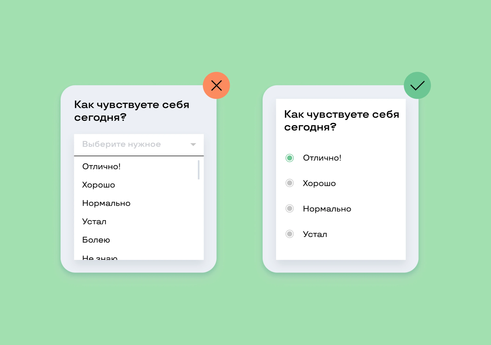
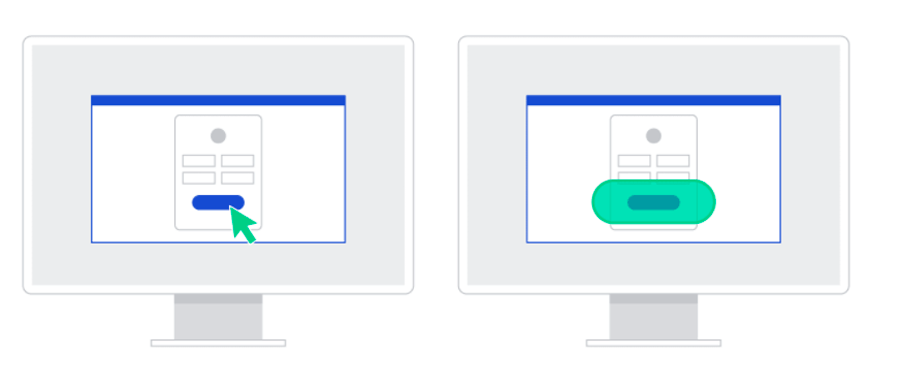
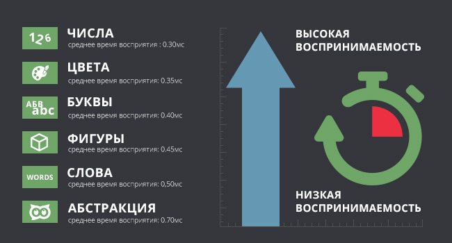
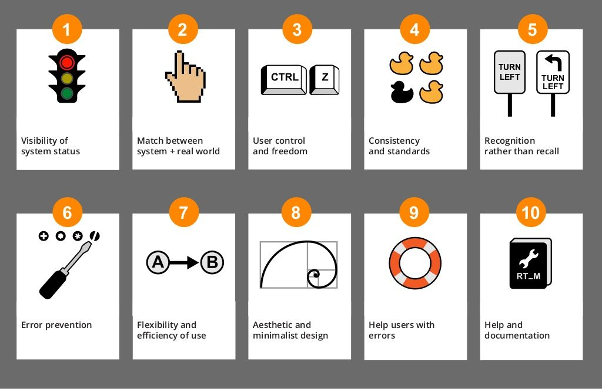

«Интуитивно понятный интерфейс» — фраза, которую все используют, но мало кто может объяснить, что она значит на самом деле. Сегодня разбираем это не как ощущение, а как набор конкретных, проверяемых принципов, которые можно применить к любому экрану — от кнопки до целого приложения.
План урока
- Что вообще значит «интуитивно понятно»
- Ментальные модели: пользователь думает не так, как система
- Закон Хика — меньше выбора, быстрее решение
- Закон Фиттса — размер и расстояние до цели
- Закон Миллера — 7±2 и ограничения памяти
- 10 эвристик юзабилити Якоба Нильсена — коротко по делу
- Паттерны и консистентность — не изобретайте велосипед
- Итог + домашнее задание
1. Что вообще значит «интуитивно понятно»
Интерфейс интуитивно понятен не потому, что он «красивый» или «простой», а потому что поведение пользователя внутри него совпадает с его ожиданиями, сформированными предыдущим опытом. Интуиция — это не магия, это использование уже существующих в голове пользователя шаблонов вместо того, чтобы заставлять его учиться новым.
иконка корзины для покупок — узнаваема в любом интернет-магазине без подписи, потому что паттерн уже «зашит» в голову пользователя.
2. Ментальные модели: пользователь думает не так, как система
Ментальная модель — это внутреннее представление пользователя о том, как что-то работает, основанное на прошлом опыте, а не на реальном устройстве системы. Разработчик знает, что «под капотом» происходит запрос к серверу и обновление базы данных — пользователь же просто думает: «я нажал сохранить, значит сохранилось».
Это типа как поговорка: «Все кажется магией, когда не знаешь физику», и какие-то вещи должны казаться для обычного пользователя «магией» и чем-то простым, даже если это технически сложно.
Задача интерфейса — не объяснять пользователю реальную архитектуру системы, а совпасть с его ожиданиями. Если ментальная модель пользователя и модель системы расходятся — начинается путаница, ошибки, разочарование.
📎 Источник: NN/g — Mental Models
3. Закон Хика — меньше выбора, быстрее решение
Закон Хика (Hick's Law): время, необходимое человеку для принятия решения, растёт с увеличением количества и сложности вариантов выбора.
Практический вывод для интерфейса: не вываливайте на пользователя 15 равнозначных кнопок сразу. Группируйте, скрывайте второстепенное за «Ещё», выделяйте один основной сценарий явно (primary button), а остальное — оставляйте на вторых ролях.

📎 Источник: Laws of UX — Hick's Law · Как использовать Закон Хика в дизайне интерфейсов
4. Закон Фиттса — размер и расстояние до цели

Закон Фиттса (Fitts's Lawб): время, необходимое для попадания в цель, зависит от расстояния до неё и от её размера — чем ближе и крупнее цель, тем быстрее и точнее в неё попадает пользователь.
Практические следствия: интерактивные элементы (кнопки, ссылки, чекбоксы) должны быть достаточно крупными и с достаточной областью клика — особенно на мобильных устройствах, где палец гораздо менее точен, чем курсор мыши. Частые действия должны быть физически ближе к точке, где находится внимание/палец пользователя.
Например, если сравнивать мелкие кнопки-«точки» и достаточные по размеру зоны нажатия, то рекомендуемый минимум для тач-интерфейсов — обычно указывают ~44×44pt в iOS HIG / ~48×48dp в Material Design, если делать меньше, то часть людей просто физические не смогут всегда попадать по кнопке.
📎 Источники: Laws of UX — Fitts's Law · Apple HIG — Layout · Material Design — Touch targets · Использование закона Фиттса: основной принцип UI/UX при разработке интернет-магазинов
5. Закон Миллера — 7±2 и ограничения памяти
Закон Миллера: объём кратковременной памяти человека в среднем ограничен 7±2 элементами (более поздние исследования сужают это число до 3–4 для сложной информации).

Практический вывод: не заставляйте пользователя удерживать в голове много несвязанных пунктов одновременно — разбивайте длинные списки и формы на группы (chunking), используйте прогресс-бары в многошаговых сценариях, не заставляйте помнить код, введённый на предыдущем шаге.
📎 Источник: Laws of UX — Miller's Law · UX-дизайн: Закон Миллера, или как снизить когнитивную нагрузку на пользователей
6. 10 эвристик юзабилити Якоба Нильсена — коротко по делу

Классический список, актуальный уже больше 25 лет. Разберём кратко:
- Видимость статуса системы — пользователь всегда должен понимать, что происходит (спиннер загрузки, а не «зависшая» пустота).
- Соответствие системы реальному миру — понятные слова и метафоры, а не жаргон разработчиков.
- Контроль и свобода пользователя — возможность отменить действие, «выход» есть всегда.
- Консистентность и стандарты — одинаковые элементы ведут себя одинаково по всему продукту.
- Предотвращение ошибок — лучше не дать совершить ошибку, чем красиво сообщить о ней потом.
- Узнавание, а не вспоминание — не заставлять помнить, показывать варианты явно.
- Гибкость и эффективность использования — быстрые пути для опытных пользователей (горячие клавиши, шаблоны).
- Эстетичный и минималистичный дизайн — не перегружать лишней информацией.
- Помощь в распознавании и исправлении ошибок — понятные сообщения об ошибках человеческим языком.
- Помощь и документация — доступна, но не обязательна для базового использования.
📎 Источник: NN/g — 10 Usability Heuristics for User Interface Design · Эвристики Нильсена: 10 принципов юзабилити для дизайна интерфейсов
7. Паттерны и консистентность — не изобретайте велосипед
Значок дискеты — «сохранить», хотя дискет никто не видел лет 20. Три горизонтальные полоски — «меню». Стрелка влево в углу — «назад». Это не случайность, а накопленные годами паттерны, которые пользователь уже знает из тысяч других продуктов. Использовать устоявшийся паттерн вместо «оригинального» решения — почти всегда выигрышная стратегия для интуитивности, даже если кажется, что «так уже все делают, скучно».
Важно для UX-редактора: то же самое работает и с текстом — стандартные формулировки («Отмена» / «Сохранить», а не «Не-а» / «Есть, шеф!») снижают когнитивную нагрузку, даже если кажутся «пресными».
📎 Источник: Консистентность в дизайне · Консистентность в UX/UI дизайне
Итог урока
Сегодня разобрали, из чего на самом деле состоит «интуитивно понятный интерфейс»: ментальные модели, законы Хика, Фиттса и Миллера, эвристики Нильсена и роль паттернов.
В следующем уроке — как на восприятие интерфейса влияют эстетика и стиль, и почему красивое воспринимается как более удобное, даже когда объективно это не так.
Домашнее задание:
- Найти в любом привычном приложении пример нарушения одного из законов (Хика/Фиттса/Миллера) — сделать скриншот и описать, что не так.
- Найти пример хорошо использованного паттерна (иконка/жест/расположение элемента), который считывается без подписи.
- Прогнать один свой макет по 10 эвристикам Нильсена и выписать 2–3 слабых места.